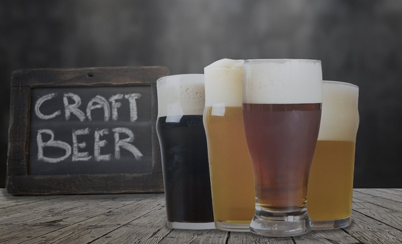

Самый востребованный и популярный напиток во всем мире – это пиво. Но проблема в том, что крупные заводы варят одни и те же сорта по устоявшейся рецептуре и технологии. Чтобы наладить производство по новому рецепту, требуются крупные денежные вложения, а это зачастую невыгодно и нецелесообразно.
Предложить покупателю новые неординарные вкусы по силам мелким частным пивоварням. Именно они и производят уникальные сорта пива в небольших количествах, называемые крафтовыми сортами.
Сколько стоит производство крафтового пива
Основные затраты владельцев частных пивоварен приходятся на оборудование и его установку. Оно может быть дешевым (производство Китай) или самым дорогим (Австрия, Германия).
Еще столько же потребуется на оформление документов, рекламную кампанию, грузовой транспорт.
Ежемесячно придется оплачивать аренду помещения, заработную плату работникам, налоги и акцизы, а также закупать сырье.
На цену пива влияет качество сырья, которое придает насыщенность и неповторимый вкус напитку.
Что же нужно для приготовления крафтового пива?
- Вода. К ней есть определенные требования – нейтральная или слабокислая реакция, щелочная вода непригодна для пива. На мягкой воде готовят светлые сорта, на жесткой – темные с горчинкой.
- Пивные дрожжи. Они разделяются по типу брожения: верховые (для сортов с горчинкой и резким вкусом – эль, портер, стаут) и низовые (лагеры). От количества дрожжей зависит скорость брожения, аромат и вкус пенного напитка.
- Солод является «телом» пива. Он формирует его вкус и качество, здесь можно экспериментировать и создавать новые уникальные композиции. В одном рецепте может применяться несколько видов солода. В промышленном производстве для приготовления пива могут применяться готовые экстракты: солодовый или мальтозная патока. Это значительно удешевляет конечный продукт, так как весь процесс сводится к размешиванию в воде дрожжей и готового экстракта.
- Хмель насыщает вкус пива различными оттенками (цитрус, хвоя, травы, землистость и так далее). Кроме того, он предотвращает напиток от порчи и придает стойкость пене.
От качества этих четырех основных ингредиентов зависит стоимость одного литра крафтового пива. Чтобы приготовить 500 литров, понадобится: 1800 литров воды, 120 килограмм солода, 1 килограмм хмеля и пол килограмма дрожжей.
Бренд и упаковка
Формирование бренда начинается с упаковки пива, а не с его качества. Новый продукт большинство покупателей выбирают по этикетке, а в дальнейшем, если качество напитка оправдает ожидания, узнают по форме бутылки, логотипу, цвету.
При производстве крафтовых сортов придется потратитmся на создание основных узнаваемых элементов бренда:
- логотип;
- визитка;
- этикетка;
- прочие брендируемые элементы: стаканы, подставки под пиво, листовки, буклеты и пр.
Также, не стоит забывать про маркетолога, дизайнера и других специалистов, работающих над продвижением бренда.
Затраты на упаковку и рекламу продукции повышают стоимость литра крафтового пива на 13 %.
Наценки
Цена литра крафтового напитка примерно в три раза больше, чем обычного, произведенного на заводе. Это объясняется тем, что помимо всех перечисленных выше затрат, существуют еще и наценки. Во-первых, сам производитель добавляет примерно 8 %, наценка оптового покупателя (посредника) составляет до 21 %, а ритейлер (розничный торговец) добавляет еще 30 %.
В результате получаем дорогой, но качественный продукт. Нельзя забывать о том, что крафт имеет свою аудиторию, которой важно не просто выпить алкогольный напиток и получить удовольствие от градусов, а насладиться вкусом, распробовать, посмаковать, посидеть в приятной компании.